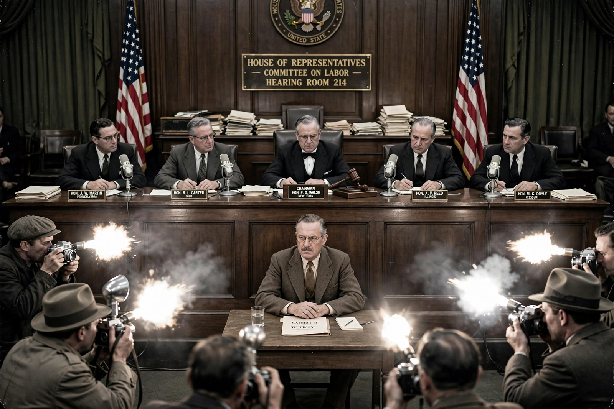

The House Un-American Activities Committee (HUAC) was an investigative committee of the United States House of Representatives, created in 1938 to investigate alleged disloyalty and subversive activities. It became notorious during the early Cold War for hearings into alleged Communist influence in Hollywood and elsewhere, which produced an industry blacklist and made "un-American" a byword for aggressive anti-communist inquisition.
| House Un-American Activities Committee | |
|---|---|
| Formed | 1938 (as the Dies Committee) |
| Abolished | 1975 |
| Notable chairs | Martin Dies Jr.; J. Parnell Thomas |
| Known for | Hollywood blacklist hearings; Alger Hiss case |
The committee began in 1938 as a special committee chaired by Martin Dies Jr. of Texas, initially targeting both Nazi sympathizers and alleged communists on the left. It became a standing committee in 1945.
In 1947 the committee held hearings into Communist influence in the film industry. Ten writers and directors — the "Hollywood Ten" — refused to answer questions about their political associations, citing the First Amendment; they were cited for contempt of Congress and imprisoned. The studios responded with the Waldorf Statement, inaugurating a blacklist that denied work to hundreds of actors, writers and directors. Witnesses who named names, such as director Elia Kazan, divided the industry for decades.
The committee's 1948 confrontation between Whittaker Chambers and State Department official Alger Hiss, in which a young congressman named Richard Nixon played a prominent role, became a defining episode of the early Cold War. HUAC's influence waned in the 1960s as courts curtailed its reach and public opinion turned; renamed the House Internal Security Committee in 1969, it was abolished in 1975.
See also: McCarthyism · Cold War